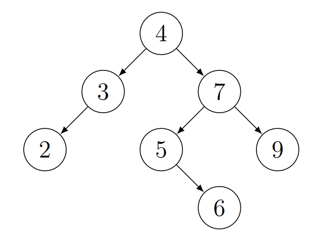
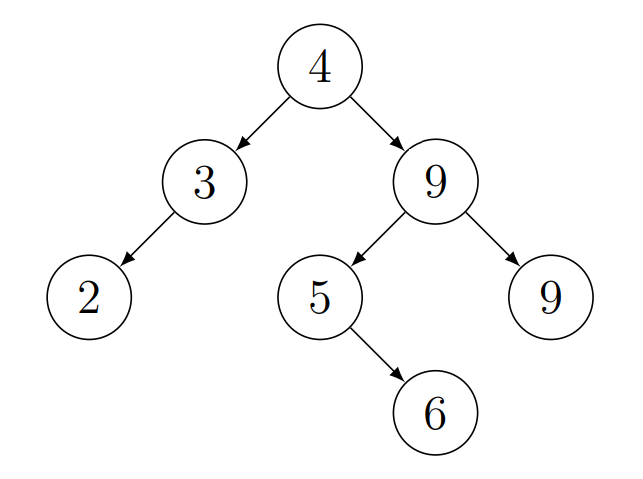

Algoritmusok és adatszerkezetek 1. > Fák > Bináris keresőfa
Egy bináris fát keresőfának nevezünk, ha minden belső csúcsára igaz, hogy a csúcs bal részfájában minden csúcs kulcsa kisebb, a jobb részfájában minden csúcs kulcsa nagyobb és minden kulcs egyedi a fában.
Egy bináris fát rendezőfának nevezünk, ha minden belső csúcsára igaz, hogy a csúcs bal részfájában minden csúcs kulcsa kisebb vagy egyenlő, a jobb részfájában minden csúcs kulcsa nagyobb vagy egyenlő és lehetnek duplikált kulcsok a fában.
A bináris keresőfát inorder bejárással kiíratjuk egy szigorúan monoton növekvő sorozatot kapunk.
A leggyakoribb művelete a fában a tárolt kulcsok keresése. Az algoritmus a gyökérnél kezdi a keresést, és egy lefelé haladó utat jár be a fában. Minden érintett csúcsnál összehasonlítja a paraméterként kapott kulcsot a csúcs kulcsával. Ha a két kulcs egyenlő, a keresés befejeződik. Ha a paraméterként kapott kulcs kisebb, mint a csúcs kulcsa, akkor a csúcs bal oldali részfájában folytatódik a keresés, ha pedig nagyobb, akkor a jobb oldali részfájában. Ha nullpointerhez értünk a keresés sikertelen.
| $search(t : Node^*; k : \mathcal{T}) : Node^*$ |
| $t \neq \emptyset \land t \rightarrow key \neq k$ | ||||
|
$k < t \rightarrow key$
|
||||
| $t := t \rightarrow left$ | $t := t \rightarrow right$ | |||
| $\text{return} \space t$ | ||||
Megváltoztatja a bináris keresőfával ábrázolt dinamikus halmazt. A módosítást természetesen úgy kell végrehajtani, hogy a bináris keresőfa tulajdonság megmaradjon.
A gyökértől indulunk és megyünk lefelé a kulcsösszehasonlításokkal mindaddig, amíg nullpointert nem találunk. Pontosan ennek a nullpointernek a helyére kell beilleszteni a kulcsot. Viszont, ha a kulcsösszehasonlítások során a kulcsok egyenlőek, akkor az azt jelenti, hogy a kulcs már benne van a fában. Mivel a keresőfában minden kulcs egyedi, így nem kell beszúrni ezt a kulcsot.
| $insert(\&t : Node^*; k : \mathcal{T})$ |
|
$t = \emptyset$
|
|||||||
| $t := \text{new} \space Node(k)$ |
$k < t \rightarrow key$
|
$k > t \rightarrow key$
|
$k = t \rightarrow key$
|
||||
| $insert(t \rightarrow left, k)$ | $insert(t \rightarrow right, k)$ | $\text{SKIP}$ | |||||
A minimális kulcsú elem mindig könnyen megtalálható, ha addig követjük a bal oldali pointereket, amíg nullpointert nem találunk.
| $min(t : Node^*) : Node^*$ |
| $t \rightarrow left \neq \emptyset$ | ||||
| $t := t \rightarrow left$ | ||||
| $\text{return} \space t$ | ||||
Először megkeressük a minimális kulcsú elemet. Mivel a minimális kulcsú elemnek nincs bal gyereke, így egyszerűen csak a jobb gyerekét rakjuk a helyére.
| $remMin(\&t, \&minp : Node^*)$ |
|
$t \rightarrow left = \emptyset$
|
||||
| $minp := t$ | $remMin(t \rightarrow left, minp)$ | |||
| $t := minp \rightarrow right$ | ||||
| $minp \rightarrow right := \emptyset$ | ||||
Megváltoztatja a bináris keresőfával ábrázolt dinamikus halmazt. A módosítást természetesen úgy kell végrehajtani, hogy a bináris keresőfa tulajdonság megmaradjon.
A $del()$ megkeresi a fában a törölni kívánt csúcsot, majd meghívja a $delRoot()$-ot.
A $delRoot()$ három esetet vizsgál meg. Ha $t$-nek nincs bal gyereke, akkor egyszerűen a jobb gyerekét kell a helyére rakni. Ha $t$-nek nincs jobb gyereke, akkor egyszerűen a bal gyerekét kell a helyére rakni. Végül, ha a csúcsnak két gyereke van, akkor $t$-nek azt a legközelebbi rákövetkezőjét kell a helyére rakni, melynek már nincs bal oldali gyereke. Ez a jobb oldali részfájának a legkisebb eleme lesz.
| $del(\&t : Node^*, k : \mathcal{T})$ |
|
$t \neq \emptyset$
|
|||||||
|
$k < t \rightarrow key$
|
$k > t \rightarrow key$
|
$k = t \rightarrow key$
|
$\text{SKIP}$ | ||||
| $del(t \rightarrow left, k)$ | $del(t \rightarrow right, k)$ | $delRoot(t)$ | |||||
| $delRoot(\&t : Node^*)$ |
| $p := t$ | |||||
|
$t \rightarrow left = \emptyset$
|
$t \rightarrow right = \emptyset$
|
$t \rightarrow left \neq \emptyset \land t \rightarrow right \neq
\emptyset$
|
|||
| $t := p \rightarrow right$ | $t := p \rightarrow left$ | $remMin(t \rightarrow right, q)$ | |||
| $q \rightarrow left := p \rightarrow left$ | |||||
| $q \rightarrow right := p \rightarrow right$ | |||||
| $t := q$ | |||||
| $\text{delete} \space p$ | |||||
Az aktuális elem inorder bejárás szerinti rákövetkezőjét keressük. Egy elem rákövetkezője a jobb oldali részfájának a legkisebb eleme vagy ha nincs jobb oldali részfája, akkor az az őse, amelytől balra helyezkedik el az elemünk. Ezért a szülő pointerre is szükségünk van. A rákövetkezőt kulcsösszehasonlítások nélkül megtalálhatjuk.
| $inorderNext(p : Node3^*) : Node3^*$ |
| $q := p \rightarrow right$ | ||||
|
$q \neq \emptyset$
|
||||
| $q \rightarrow left \neq \emptyset$ | $q := p \rightarrow parent$ | |||
| $q := q \rightarrow left$ | $q \neq \emptyset \land q \rightarrow left \neq p$ | |||
| $p := q; \space q := q \rightarrow parent$ | ||||
| $\text{return} \space q$ | ||||
Mindegyik műveletre igaz, hogy $MT(h) \in \Theta (h)$, ahol $h$ a fa magassága.
Az alábbi feladatok a gyakorlatokon elvégzendő kötelező, illetve gyakorló feladatok.